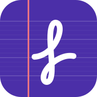

French DailyMercredi, 7h42
So I built a 10-minute daily page that makes you speak and write — not just tap.
How it works
No menus. No choices. Open it, press it, and today's page is done in about ten minutes.
Bonjour.
Aujourd'hui : Au café
No passive listening
You can't skip a line until you've produced it. Mistakes come back in red pen.
Hier soir, j'ai regardé un film un peu de long.
→ Hier soir, j'ai vu un film un peu long.
“un peu” goes straight before the adjective — no “de”.
Why you can't follow natives
People don't talk like that. Here's what you actually hear:
| je ne sais pas | chais pas |
| je suis | chuis |
| il y a | y a |
| tu es | t'es |
It remembers for you
Words come back right before you'd forget them — then less and less often. Two buttons: Pas encore or Je savais.
la monnaie
change (coins)
No “fluent in 3 months”
| 15 min a day | A2 | errands & small talk in ~12 months |
| 30 min a day | B1 | get by in conversation in ~12 months |
| 1 hour a day | B2 | most topics, films with effort |
Estimates for showing up most days.
Free. No account needed to try.
michaelojekunle.dev/french
Hoy: En la cafetería
One Spanish page a day. Ten minutes. You hear it, you say it back, you write it — and it remembers your mistakes.
Spanish the way people say it
| para el | pa'l |
| estoy | 'toy |
| cansado | cansao |
| nada | na' |
Start today
15 min a day ≈ A2 in a year. 30 min ≈ B1. Honest estimates, no magic.
Gratis. No account needed to try.
michaelojekunle.dev/spanish
One page a day, ~10 minutes. Say every line back, write it from memory, get it corrected in red.
michaelojekunle.dev/french
Hier soir, je suis allé au cinéma.
Hier soir, j'ai allé au cinéma.
→ je suis allé
aller takes être in the passé composé.
One Spanish page a day. Answer questions in your own words and get corrected — free to try, no account.
michaelojekunle.dev/spanish
¿Qué hiciste anoche?
Anoche fue al cine.
→ Anoche fui al cine.
fui = I went · fue = he/she went
POV:
Here's the 10-minute daily page that fixes it.
POV:
Ten minutes a day, out loud. Free to try.